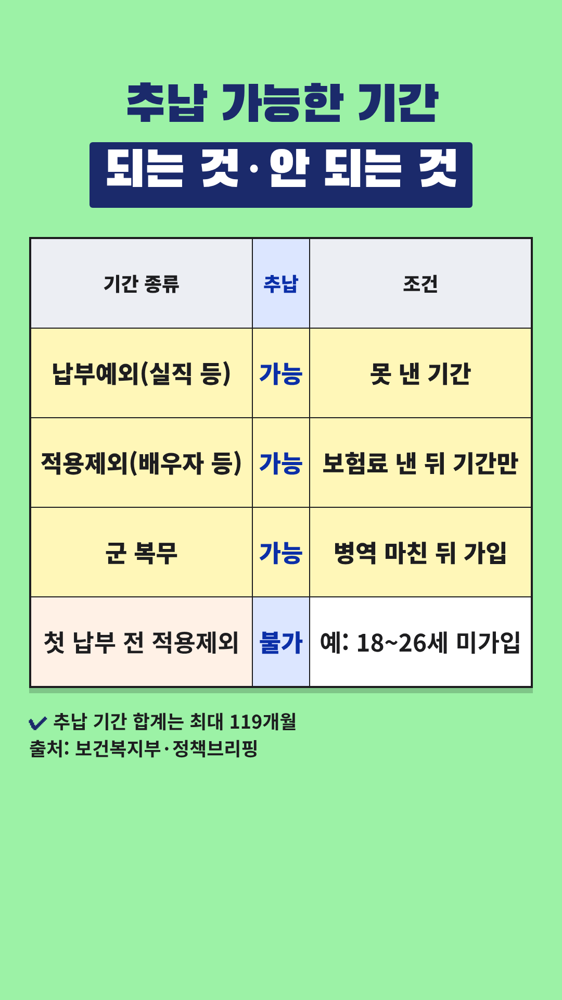
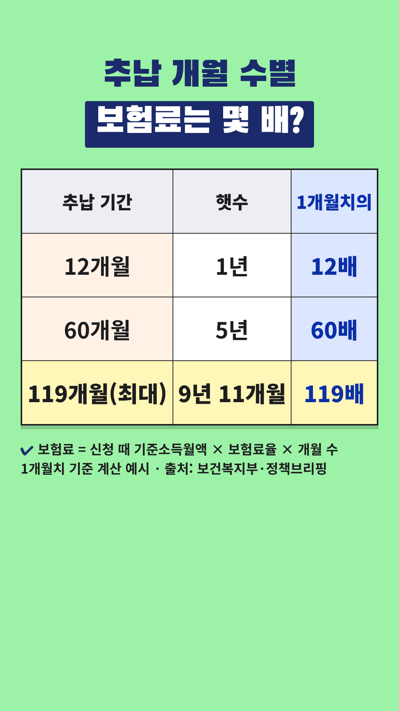

Vrew 작업 카드
2026-11-05-국민연금-추납 · 사실 검증과 업로드 전 점검을 통과한 회차입니다. 위에서부터 차례로 복사해 붙여넣으세요.
- 대본 붙여넣기 → AI 목소리(차분한 중년, 0.9~1.0배)
- 장면마다 AI 이미지 문구 복사 → 이미지 바꾸기
- 큰 글자가 있는 장면에 텍스트 추가
- 배경음악(오디오 보관함·Vrew 음원) → 내보내기 mp4
- 제목·설명란·고정댓글 복사해 업로드
0단계 · 첫 장면 강조 제목
Vrew 1번 장면 → 삽입 → 이미지 → 같은 폴더의 title-overlay.png(투명 배경) → 화면 전체 크기로 맨 위에 얹기. 1번 장면의 '큰 글자'는 이 이미지가 대신하므로 따로 넣지 않습니다. 아래 배경은 AI 이미지 자리 표시입니다.
0-1단계 · 숫자 카드 (표 이미지)


표시된 장면들을 하나로 이어 붙이거나 장면마다 → 이미지 바꾸기 → 같은 폴더의 number-N.png를 화면 전체 크기로 넣습니다. 이 장면들에는 AI 이미지와 큰 글자를 넣지 않습니다. 자막은 화면 맨 아래에 두어 표를 가리지 않게 합니다.
1단계 · 대본
1. 대본 붙여넣기
Vrew → 새로 만들기 → 텍스트로 비디오 만들기 → 쇼츠 9:16 → 대본 칸에 붙여넣기
국민연금, 빠진 기간 최대 119개월 채워요. 휴직이나 실직으로 못 낸 보험료를 나중에 내는 제도가 추납이에요. 대상 기간은 3가지예요. 1번, 실직 등 납부예외 기간이에요. 2번, 무소득 배우자 등 적용제외 기간이에요. 3번, 군 복무 기간이에요. 단, 적용제외는 보험료 낸 뒤 기간만이에요. 추납은 10년 미만, 최대 119개월이에요. 보험료는 신청할 때 소득으로 계산해요. 12개월이면 1개월치의 12배를 내요. 연금 받기 전에 신청해야 해요. 내는 돈과 늘어날 연금을 비교하세요. 정리하면 3가지 기간, 최대 119개월이에요. 개인 상황에 따라 다르니 전문가와 상담하세요.
2~3단계 · 장면별 이미지와 큰 글자
장면 1
나레이션국민연금, 빠진 기간 최대 119개월 채워요.
AI 이미지달력의 빈 칸을 채우는 손과 연금 안내 책자, 위쪽은 흐린 벽과 하늘, 따뜻한 자연광, 사실적인 사진 스타일, 세로 9:16 구도, 화면에 글자 없음
큰 글자빠진 연금 기간
최대 119개월
장면 2
나레이션휴직이나 실직으로 못 낸 보험료를
AI 이미지소파에 앉아 구직 공고를 보는 50대 한국인 부부, 따뜻한 자연광, 사실적인 사진 스타일, 세로 9:16 구도, 화면에 글자 없음
장면 3
나레이션나중에 내는 제도가 추납이에요.
AI 이미지서류에 도장을 찍으려는 손, 책상 위 안내문, 따뜻한 자연광, 사실적인 사진 스타일, 세로 9:16 구도, 화면에 글자 없음
장면 4
나레이션대상 기간은 3가지예요.
숫자 카드number-1.png를 화면 전체로 (AI 이미지·큰 글자 대신)
장면 5
나레이션1번, 실직 등 납부예외 기간이에요.
숫자 카드number-1.png를 화면 전체로 (AI 이미지·큰 글자 대신)
장면 6
나레이션2번, 무소득 배우자 등 적용제외 기간이에요.
숫자 카드number-1.png를 화면 전체로 (AI 이미지·큰 글자 대신)
장면 7
나레이션3번, 군 복무 기간이에요.
숫자 카드number-1.png를 화면 전체로 (AI 이미지·큰 글자 대신)
장면 8
나레이션단, 적용제외는 보험료 낸 뒤 기간만이에요.
숫자 카드number-1.png를 화면 전체로 (AI 이미지·큰 글자 대신)
장면 9
나레이션추납은 10년 미만, 최대 119개월이에요.
숫자 카드number-2.png를 화면 전체로 (AI 이미지·큰 글자 대신)
장면 10
나레이션보험료는 신청할 때 소득으로 계산해요.
숫자 카드number-2.png를 화면 전체로 (AI 이미지·큰 글자 대신)
장면 11
나레이션12개월이면 1개월치의 12배를 내요.
숫자 카드number-2.png를 화면 전체로 (AI 이미지·큰 글자 대신)
장면 12
나레이션연금 받기 전에 신청해야 해요.
AI 이미지연금 안내 책자를 읽는 60대 한국인 부부, 따뜻한 자연광, 사실적인 사진 스타일, 세로 9:16 구도, 화면에 글자 없음
장면 13
나레이션내는 돈과 늘어날 연금을 비교하세요.
AI 이미지계산기와 메모를 보며 고민하는 60대 한국인, 따뜻한 자연광, 사실적인 사진 스타일, 세로 9:16 구도, 화면에 글자 없음
장면 14
나레이션정리하면 3가지 기간, 최대 119개월이에요.
AI 이미지산책하는 60대 한국인 부부, 따뜻한 자연광, 사실적인 사진 스타일, 세로 9:16 구도, 화면에 글자 없음
장면 15
나레이션개인 상황에 따라 다르니 전문가와 상담하세요.
AI 이미지상담 창구에서 상담원과 이야기하는 60대 한국인, 따뜻한 자연광, 사실적인 사진 스타일, 세로 9:16 구도, 화면에 글자 없음
5단계 · 업로드 정보
제목
국민연금 추납, 빠진 기간을 최대 119개월까지 채워요
설명란
[음원] 칸은 고른 배경음악으로 채운 뒤 올리세요.
국민연금 추후납부(추납)는 휴직·실직 등으로 보험료를 내지 못한 기간의 보험료를 나중에 내서 가입 기간으로 인정받는 제도예요. 추납을 신청할 수 있는 기간은 3가지예요. ① 실직·사업중단 등 납부예외 기간 ② 무소득 배우자 등 적용제외 기간(보험료를 처음 낸 뒤의 기간만) ③ 군 복무 기간(병역을 마친 뒤 가입자 자격을 얻은 경우). 추납할 수 있는 기간은 10년 미만, 최장 119개월이에요. 보험료는 신청할 때의 기준소득월액에 보험료율과 개월 수를 곱해 계산해요. 같은 기준이면 12개월은 1개월치의 12배, 119개월은 119배예요. 연금을 받기 전(연금 수급권을 취득하기 전)에 신청할 수 있어요. [이 영상에서 말하지 않은 것] - 실제 보험료 금액, 보험료율, 기준소득월액 상한·하한은 해마다 달라질 수 있어 말하지 않았어요. 국민연금공단에서 확인해 주세요. - 추납으로 연금이 얼마나 늘어나는지는 가입 기간·소득 등에 따라 달라서 말하지 않았어요. 내는 돈과 늘어날 연금을 비교해 보세요. [출처] - 보건복지부 보도참고자료(정책브리핑, 2026-09-01) 붙임 '국민연금 보험료 추후납부제도 개요': https://www.korea.kr/briefing/pressReleaseView.do?newsId=156776344 - 정책브리핑 국민이 말하는 정책 '청년들이 미리 알아두면 좋을 국민연금의 이모저모' (2021-08-24): https://www.korea.kr/news/reporterView.do?newsId=148891645 [꼭 직접 확인해 주세요] 이 영상은 정부 공개 자료를 바탕으로 만들었고, 국민연금법 조문 원문과 국민연금공단 누리집은 직접 대조하지 못했어요. 대상 기간, 최대 119개월, 신청 기한은 국민연금공단(1355)이나 공단 누리집 '추후납부' 안내에서 직접 확인해 주세요. [음원] [Vrew 작업 후 vrew.md 음원 기록란에서 채우기] [안내] 이 영상은 공공기관 자료를 바탕으로 한 일반 정보이며, 금융·세무·법률 상담을 대신하지 않습니다. 추납 가능 여부와 보험료, 유불리는 가입 이력, 소득, 연령 등 개인 상황에 따라 다르니 국민연금공단에서 확인하시고 전문가와 상담하세요. #쇼츠 #국민연금 #추납 #노후준비 #5060
고정댓글
빠진 기간이 있는지 확인해 보신 적 있나요? 추납에 대해 궁금한 점이나 경험을 댓글로 나눠 주세요.
업로드 추천 시간: 저녁 8시